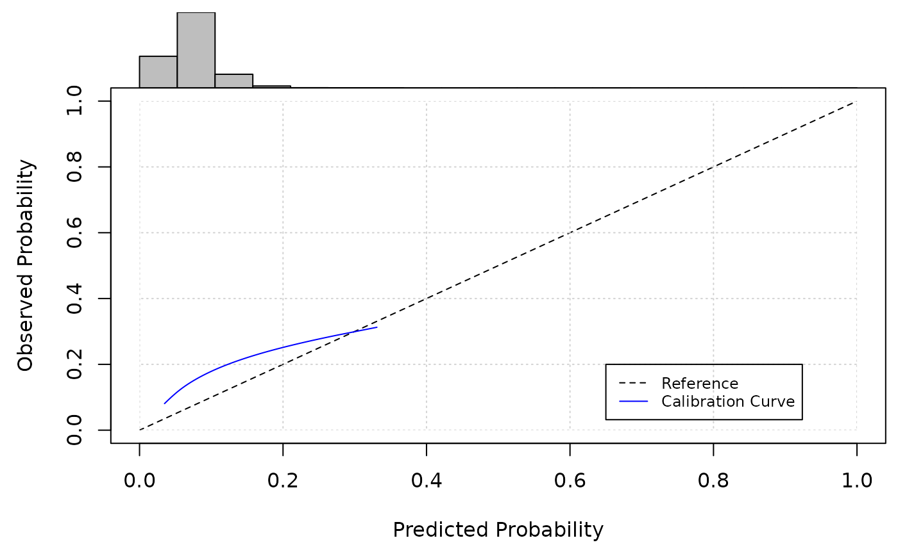
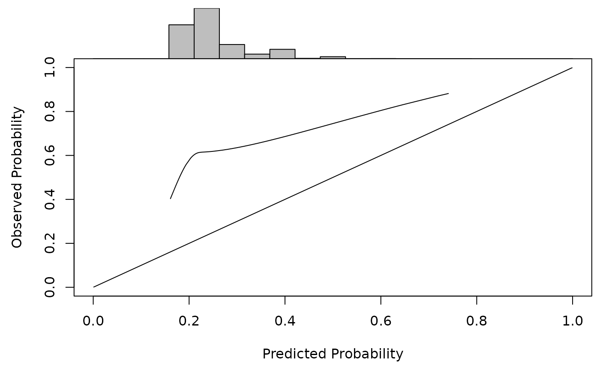

Introduction to the predRupdate package
Glen P. Martin, PhD; David Jenkins, PhD; Matthew Sperrin, PhD
Source:vignettes/predRupdate.Rmd
predRupdate.RmdPreamble
The predRupdate package includes a set of functions
to aid in the validation of a clinical prediction model (CPM) on a given
dataset, and to apply various model updating and aggregation methods.
This vignette aims to overview, through examples, some common workflows
of using the predRupdate package. For a technical
vignette describing the methods underpinning the package, please see
vignette("predRupdate_technical").
The package is focused on the situation where there is an existing CPM (or multiple CPMs) that has been developed (e.g., a model published in the literature), and one wishes to apply this model to a new dataset. We foresee at least three use-cases: (1) where one wishes to externally validate the existing CPM on the new data to tests the model’s predictive performance, i.e., external validation; (2) where one wishes to apply model updating methods to the existing CPM to ‘tailor’ it to the new dataset; and (3) where there are multiple existing CPMs, and one wishes to apply model aggregation (meta-modelling) methods to pool these models into a single model for the new dataset. We therefore give three examples below for each of these use cases.
Data
The data used throughout this vignette are available within the package, and can be loaded by
data(SYNPM)See “?SYNPM” for details. The data and models included in this object are synthetic, but for the purposes of this vignette, we imagine that one is interested in predicting someone’s risk of mortality after surgery. Data are available on 20000 people, which records each individuals age, gender, smoking status, diabetes status, and chronic kidney disease (CKD) status at the time of surgery. The data includes the outcomes of “ETime” representing the time (months) between surgery and either death or end-of-follow-up (5 months), whichever occurred first. The variable “Status” indicates if the patient died (1) or was right-censored (0), and Y denotes a binary variable indicating if the patient died within 1 month.
Example 1: validating an existing prediction model on new data
In this first example, we take a situation where a CPM has previously been developed (in another dataset) to predict the risk of mortality within 1 month of surgery, and we wish to validate this model in our dataset to test the predictive performance (e.g., an external validation study).
The existing model was a logistic regression model, with the following predictor variables and coefficients (log-odds ratios):
| Coefficient | |
|---|---|
| Intercept | -3.400 |
| SexM | 0.306 |
| Smoking_Status | 0.628 |
| Diabetes | 0.499 |
| CKD | 0.538 |
The first step in using predRupdate to validate this model is to input the model information. We start by creating a data.frame of the model coefficients, with the columns being the predictor variable names. This information is then passed into the “pred_input_info()” function to input the information about the existing model. See the help file of “pred_input_info()” for details.
# create a data.frame of the model coefficients, with columns being variables
coefs_table <- data.frame("Intercept" = -3.4, #the intercept needs to be named exactly as given here
"SexM" = 0.306,
"Smoking_Status" = 0.628,
"Diabetes" = 0.499,
"CKD" = 0.538)
#pass this into pred_input_info()
Existing_Logistic_Model <- pred_input_info(model_type = "logistic",
model_info = coefs_table)
summary(Existing_Logistic_Model)
#> Information about 1 existing model(s) of type 'logistic'
#>
#> Model Coefficients
#> =================================
#> Intercept SexM Smoking_Status Diabetes CKD
#> 1 -3.4 0.306 0.628 0.499 0.538
#>
#> Model Functional Form
#> =================================
#> SexM + Smoking_Status + Diabetes + CKDNext we wish to apply this model to our dataset to calculate the predicted risks for each individual, and then compare these predictions with the observed outcomes to calculate predictive performance. This can all be achieved with the “pred_validate()” function, as follows:
pred_validate(x = Existing_Logistic_Model,
newdata = SYNPM$ValidationData,
binary_outcome = "Y")
#> Calibration Measures
#> =================================
#> Estimate Std. Err Lower 95% Confidence Interval
#> Calibration-in-the-large 0.6305 0.0251 0.5812
#> Calibration Slope 0.4663 0.0694 0.3303
#> Upper 95% Confidence Interval
#> Calibration-in-the-large 0.6798
#> Calibration Slope 0.6024
#>
#> Also examine the calibration plot, if produced.
#>
#> Discrimination Measures
#> =================================
#> Estimate Std. Err Lower 95% Confidence Interval
#> AUC 0.5468 0.0068 0.5334
#> Upper 95% Confidence Interval
#> AUC 0.5602
#>
#>
#> Overall Performance Measures
#> =================================
#> Cox-Snell R-squared: -0.0279
#> Nagelkerke R-squared: -0.0622
#> Brier Score: 0.0814
#>
#> Also examine the histogram of predicted risks.This produces a flexible calibration plot, along with outputting various metrics of model calibration (e.g., calibration intercept and slope), discrimination (e.g., area under the ROC curve) and overall performance (e.g., R-squared). We can see that this model has poor calibration (calibration plot deviating from the y=x line, with calibration intercept and slope significantly different from 0 and 1, respectively), and poor discrimination. One may wish to update this model to the new dataset - see Example 2 below.
Survival analysis model
The above example considered the validation of an existing CPM that was based on logistic regression. predRupdate also contains functionality to validate CPMs that are based on time-to-event (survival) models (e.g. a Cox proportional hazards model). In such a case, the baseline cumulative hazard of the model should also be specified, along with the regression coefficients.
For example, suppose an existing CPM was developed using Cox proportional hazards to predict time-to-death after surgery, with the following predictor parameters (log hazard ratios):
| Coefficient | |
|---|---|
| Age | 0.008 |
| SexM | 0.257 |
| Smoking_Status | 0.697 |
| Diabetes | 0.310 |
| CKD | 0.636 |
and with the following baseline cumulative hazard:
| time | hazard |
|---|---|
| 1 | 0.0222923 |
| 2 | 0.0473767 |
| 3 | 0.0727716 |
| 4 | 0.1019639 |
| 5 | 0.1300490 |
We can then use the “pred_validate()” function to validate this model in the new dataset. This follows a similar syntax to above for the logistic model. We need to specify a time during follow-up that we’d like to validate the model against - this time must also be available in the baseline cumulative hazards. Lets imagine we wish to validate the models at 5 months follow-up.
# create a data.frame of the model coefficients, with columns being variables
coefs_table <- data.frame("Age" = 0.008,
"SexM" = 0.257,
"Smoking_Status" = 0.697,
"Diabetes" = 0.310,
"CKD" = 0.636)
#pass this into pred_input_info()
Existing_TTE_Model <- pred_input_info(model_type = "survival",
model_info = coefs_table,
baselinehazard = BH_table) #where BH_table is the baseline hazard above
#now validate against the time-to-event outcomes in the new dataset:
pred_validate(x = Existing_TTE_Model,
newdata = SYNPM$ValidationData,
survival_time = "ETime",
event_indicator = "Status",
time_horizon = 5)
#> Calibration Measures
#> =================================
#> Estimate Std. Err Lower 95% Confidence Interval
#> Observed:Expected Ratio 2.4153 0.0092 2.3721
#> Calibration Slope 0.5289 0.0270 0.4760
#> Upper 95% Confidence Interval
#> Observed:Expected Ratio 2.4594
#> Calibration Slope 0.5818
#>
#> Also examine the calibration plot, if produced.
#>
#> Discrimination Measures
#> =================================
#> Estimate Std. Err Lower 95% Confidence Interval
#> Harrell C 0.5554 0.0027 0.5501
#> Upper 95% Confidence Interval
#> Harrell C 0.5607
#>
#> Also examine the histogram of predicted risks.Example 2: model updating on new data
In the validation of an existing logistic regression model in Example
1 above, we found that the existing model was miscalibrated in the new
data. One strategy to handle this is to apply model updating methods.
See vignette("predRupdate_technical") for a technical
discussion of these methods. We here choose to apply model
re-calibration; to do so, we can use the “pred_update()” function:
# create a data.frame of the model coefficients, with columns being variables
coefs_table <- data.frame("Intercept" = -3.4,
"SexM" = 0.306,
"Smoking_Status" = 0.628,
"Diabetes" = 0.499,
"CKD" = 0.538)
#pass this into pred_input_info()
Existing_Logistic_Model <- pred_input_info(model_type = "logistic",
model_info = coefs_table)
#apply the pred_update function to update the model to the new dataset:
Updated_model <- pred_update(Existing_Logistic_Model,
update_type = "recalibration",
newdata = SYNPM$ValidationData,
binary_outcome = "Y")One could then validate this updated model using “pred_validate()”, but given we have updated the model in the new data, then any such performance estimates would need to be adjusted for in-sample optimism (e.g., using cross-validation or bootstrap internal validation):
pred_validate(Updated_model,
newdata = SYNPM$ValidationData,
binary_outcome = "Y")
#> Calibration Measures
#> =================================
#> Estimate Std. Err Lower 95% Confidence Interval
#> Calibration-in-the-large 0 0.0250 -0.0490
#> Calibration Slope 1 0.1488 0.7083
#> Upper 95% Confidence Interval
#> Calibration-in-the-large 0.0490
#> Calibration Slope 1.2917
#>
#> Also examine the calibration plot, if produced.
#>
#> Discrimination Measures
#> =================================
#> Estimate Std. Err Lower 95% Confidence Interval
#> AUC 0.5468 0.0068 0.5334
#> Upper 95% Confidence Interval
#> AUC 0.5602
#>
#>
#> Overall Performance Measures
#> =================================
#> Cox-Snell R-squared: 0.0022
#> Nagelkerke R-squared: 0.0049
#> Brier Score: 0.0799
#>
#> Also examine the histogram of predicted risks.Similar functionality is available for time-to-event models.
Example 3: model aggregation on new data
Sometimes, there are instances where multiple existing CPMs are
available for the same prediction task (e.g., existing models developed
across different countries). Here, model aggregation methods can be used
to pool these existing CPMs into a single model in the new data. See
vignette("predRupdate_technical") for a technical
discussion of these methods.
To implement this, we input the information about multiple models into “pred_input_info()”; each row of the model_info parameter should be the coefficients of the existing models. Any parameter that is not included in a given CPM should have value NA, as shown below:
coefs_table <- data.frame(rbind(c("Intercept" = -3.4,
"SexM" = 0.306,
"Smoking_Status" = 0.628,
"Diabetes" = 0.499,
"CKD" = 0.538,
"Age" = NA),
c("Intercept" = -4.748,
"SexM" = 0.196,
"Smoking_Status" = 0.492,
"Diabetes" = 0.350,
"CKD" = 0.555,
"Age" = 0.049),
c("Intercept" = -3.267,
"SexM" = NA,
"Smoking_Status" = 0.477,
"Diabetes" = NA,
"CKD" = 0.444,
"Age" = NA)))
multiple_mods <- pred_input_info(model_type = "logistic",
model_info = coefs_table)
summary(multiple_mods)
#> Information about 3 existing model(s) of type 'logistic'
#>
#> Model Coefficients
#> =================================
#> [[1]]
#> Intercept SexM Smoking_Status Diabetes CKD
#> 1 -3.4 0.306 0.628 0.499 0.538
#>
#> [[2]]
#> Intercept SexM Smoking_Status Diabetes CKD Age
#> 2 -4.748 0.196 0.492 0.35 0.555 0.049
#>
#> [[3]]
#> Intercept Smoking_Status CKD
#> 3 -3.267 0.477 0.444
#>
#>
#> Model Functional Form
#> =================================
#> Model 1: SexM + Smoking_Status + Diabetes + CKD
#> Model 2: SexM + Smoking_Status + Diabetes + CKD + Age
#> Model 3: Smoking_Status + CKDWe can then use “pred_stacked_regression()” function to apply stacked regression to pool these models into a single model for the new dataset:
SR <- pred_stacked_regression(x = multiple_mods,
newdata = SYNPM$ValidationData,
binary_outcome = "Y")
summary(SR)
#> Information about 1 existing model(s) of type 'logistic'
#>
#> Model Coefficients
#> =================================
#> Intercept SexM Smoking_Status Diabetes CKD Age
#> 1 -4.218335 0.153362 0.2369426 0.2708833 0.2840453 0.03353801
#>
#> Model Functional Form
#> =================================
#> SexM + Smoking_Status + Diabetes + CKD + AgeOne could then validate this updated model using “pred_validate()”, but given we have updated the model in the new data, then any such performance estimates would need to be adjusted for in-sample optimism (e.g., using cross-validation or bootstrap internal validation):
pred_validate(SR,
newdata = SYNPM$ValidationData,
binary_outcome = "Y")#> Calibration Measures
#> =================================
#> Estimate Std. Err Lower 95% Confidence Interval
#> Calibration-in-the-large 0 0.0250 -0.0491
#> Calibration Slope 1 0.1214 0.7621
#> Upper 95% Confidence Interval
#> Calibration-in-the-large 0.0491
#> Calibration Slope 1.2379
#>
#> Also examine the calibration plot, if produced.
#>
#> Discrimination Measures
#> =================================
#> Estimate Std. Err Lower 95% Confidence Interval
#> AUC 0.5614 0.0071 0.5476
#> Upper 95% Confidence Interval
#> AUC 0.5753
#>
#>
#> Overall Performance Measures
#> =================================
#> Cox-Snell R-squared: 0.0033
#> Nagelkerke R-squared: 0.0074
#> Brier Score: 0.0798
#>
#> Also examine the histogram of predicted risks.Similar functionality is available for time-to-event models.